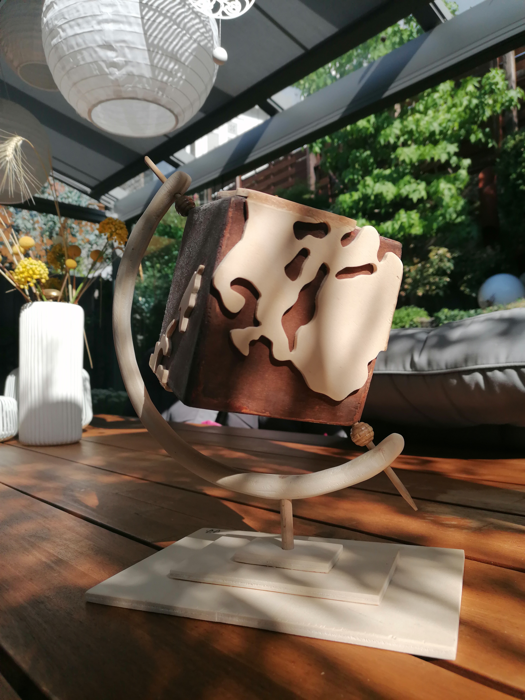
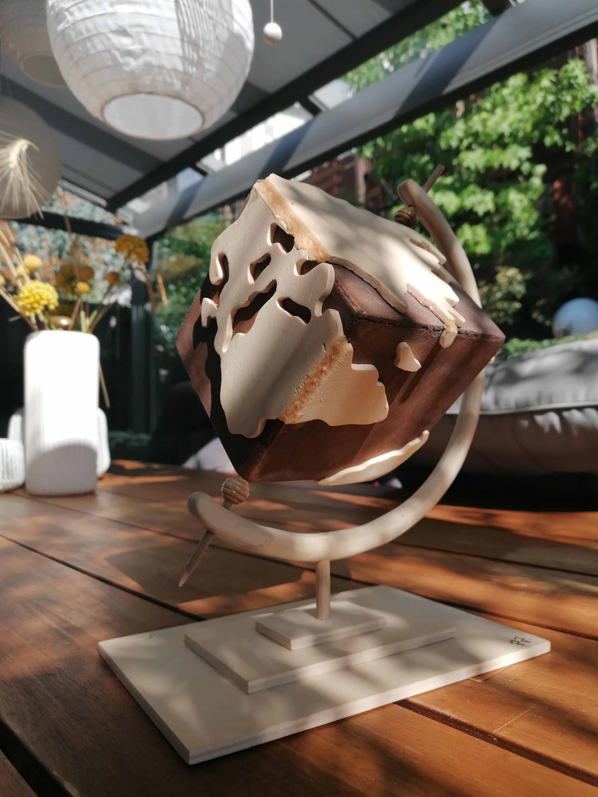
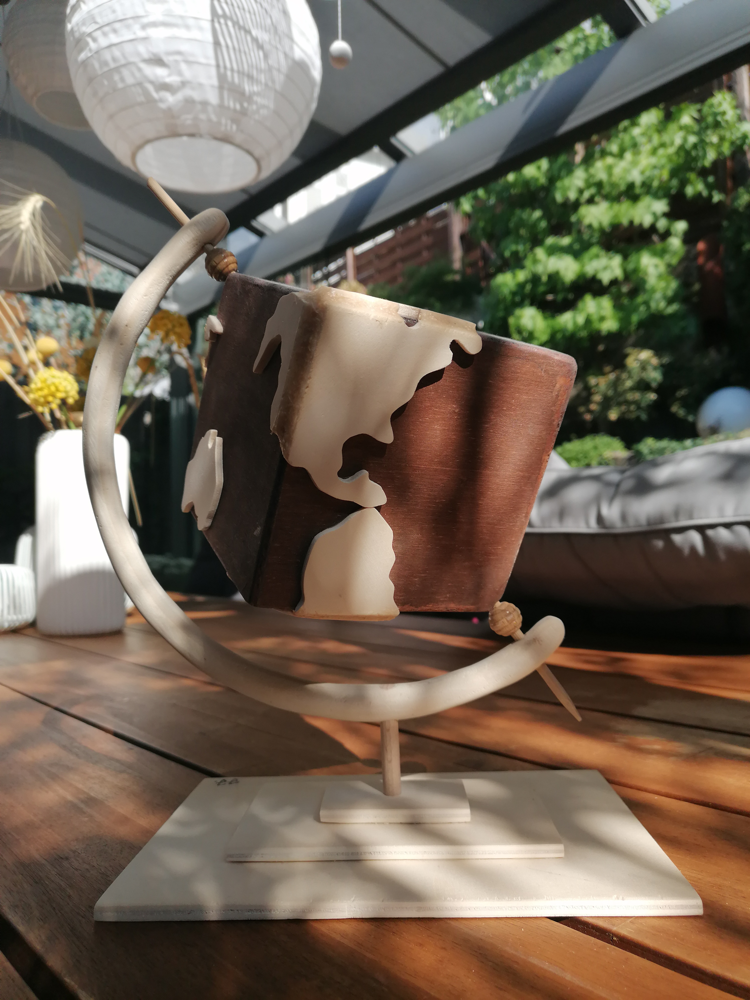
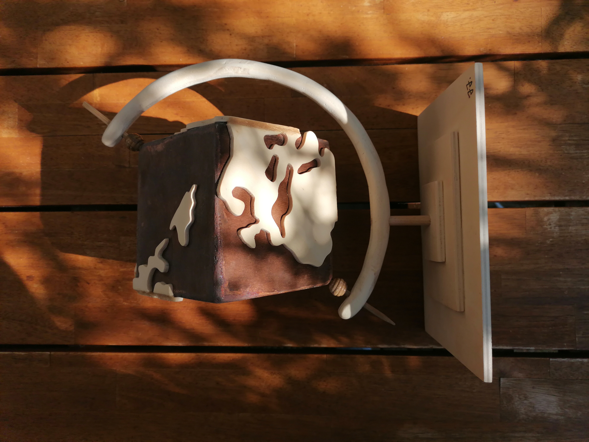
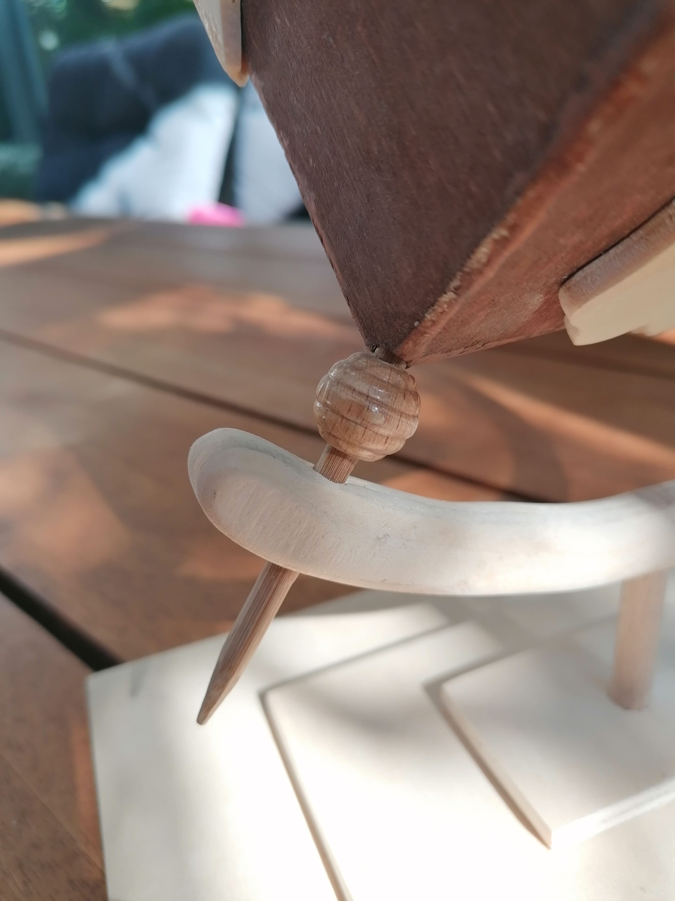
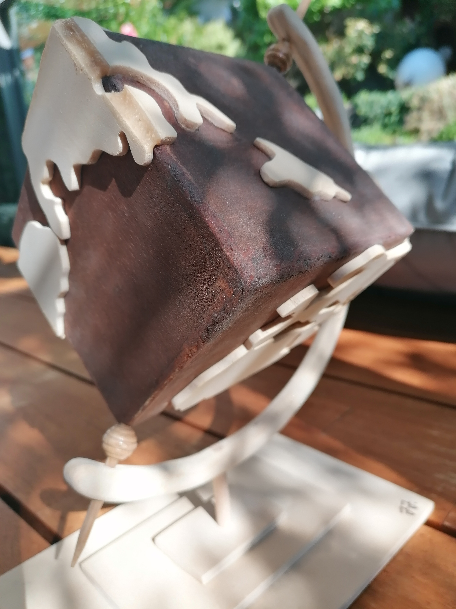

| Details: |
|
|---|---|
| Maße | 21cm x 15cm x 31cm |
| Material | Holzspanplatten, Holzleim, zwei Holzperlen, Schaschlikspieß, dunkle Holzlasur |
| Auftraggeberin | Eigenmotivierte Kreation |
| Architektin | Zoé Zimmermann |
| Baubeginn | Dezember 2022 |
| Fertigstellung | Juli 2023 |